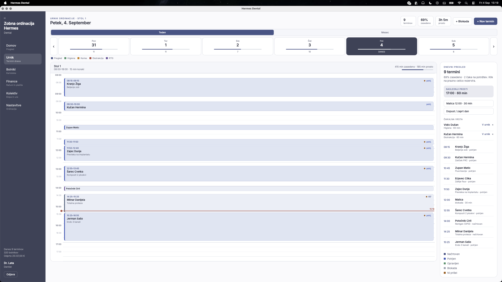
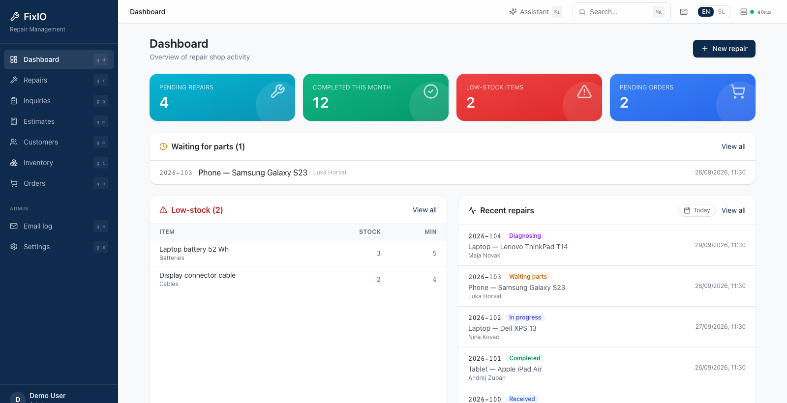

Najprej delovni proces
Pred oblikovanjem zaslonov ali avtomatizacij opišemo trenutni proces, izjeme in ljudi, odgovorne za posamezne odločitve.
03 / Zasebne aplikacije
Osredotočena aplikacija lahko poveže razdrobljene korake v en delovni proces. Začnemo pri ljudeh, odločitvah in podatkih, nato izberemo majhen, uporaben začetni obseg.
Kaj vključuje storitevKje pomaga
Začnemo pri ljudeh in nalogi, ki jo mora rešitev opraviti.
Pred oblikovanjem zaslonov ali avtomatizacij opišemo trenutni proces, izjeme in ljudi, odgovorne za posamezne odločitve.
Določimo, kdo lahko vidi ali spreminja zapise, kje naj bodo podatki in katere obstoječe sisteme je treba povezati. Zasebna aplikacija ne pomeni samodejno delovanja na napravi.
Osrednjo nalogo zgradimo in preizkusimo z bodočimi uporabniki. Omejitve, varnostne kopije, vzdrževanje in poznejše dodatke vključimo v dogovorjeni obseg.
Apollovi projekti
Spoznajte dve Apollovi aplikaciji, zasnovani za vsakodnevno delo različnih ekip.

macOS · Zobne ordinacije
Program za samostojne zobozdravstvene ordinacije z enim stolom: urnik, kartoteka in vsakodnevno delo v eni aplikaciji.
Raziščite Hermes Dental
Windows · Servisne delavnice
Namizno delovno okolje, ki za servisno ekipo povezuje popravila, stranke, zalogo in naročila delov.
Raziščite FixIOVas zanima Apollova aplikacija, prilagojen delovni proces ali sodelovanje pri novi ideji?
Potek projekta
Funkcije in načrt izvedbe določimo, ko razumemo vaše potrebe.
Popišemo naloge, uporabnike, predaje in pomembne vire podatkov.
Nujna dejanja ločimo od poznejših zamisli ter določimo dostop in merila uspeha.
Proces preverimo z reprezentativnimi primeri in zabeležimo uporabo ter vzdrževanje aplikacije.
Pred začetkom
Ta vprašanja nam pomagajo določiti uresničljiv začetni obseg.
Naslednji korak
Javno pot za projektna povpraševanja še pripravljamo. Ceno in rok izvedbe dogovorimo za vsak projekt posebej; na tej strani ni mogoče oddati rezervacije.